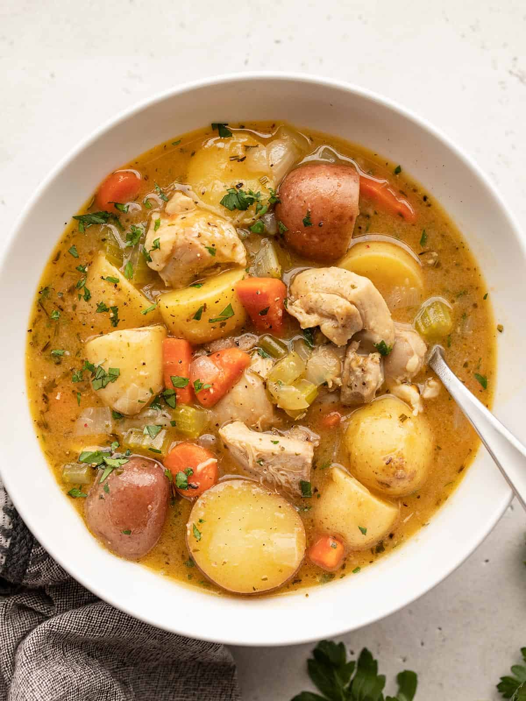

Chicken Stews

Thick hearty chicken stew that's absolutely packed full of flavor!
Use Chicken Thighs
Look, I know some people really don’t like dark meat, but that those tender chicken thighs really take this dish to the next level. I strongly advise against using chicken breast, but if you must, opt for a bone-in chicken breast for a little more flavor, then just shred and remove the bones after the stew simmers.
Broth
You really want to use a good quality, flavorful broth for this chicken stew. I used Better Than Bouillon because it’s my favorite and it tends to be very flavorful. I also used a combination of two types of broth, chicken and vegetable, which I really think adds to the complexity of the flavor and helps deepen the color of the broth.
Ingredients
- 1 Yellow onion
- 3 ribs celery
- 4 (or as many) cloves of garlic
- 1/2 lb. carrots
- 2 lb. boneless, skinless chicken thighs
- 4 Tbsp all-purpose flower, divided
- 2 Tbsp butter
- 1 Tbsp olive oil
- 1.5 lbs baby potatoes
- 1 tsp dried parsley
- 1/2 tsp died thyme
- 1/2 tsp dried sage
- 1/4 tsp cracked black pepper
- 4 cups chicken broth
- 1 Tbsp chooped parlsey (optional)
Instructions
- the onion and celery, mince the garlic, slice the carrots, and cut the baby potatoes in half before you begin.
- Cut the chicken thighs into 1-inch pieces. Sprinkle 2 Tbsp of the flour over the chicken and toss until the chicken is evenly coated.
- Add the butter and olive oil to a large pot. Heat the butter and oil over medium until they are hot and sizzling.
- Add the flour-coated chicken to the pot with the butter and oil and allow the chicken to brown on all sides (avoid stirring until browned on the bottom). When the chicken is browned and there is a nice brown layer of flour on the bottom of the pot, remove the chicken to a clean bowl with a slotted spoon. The chicken does not need to be cooked through at this point, just browned on the outside.
- Add the onion, celery, garlic, and carrots to the pot and continue to sauté until the onions are soft. Use the moisture released by the vegetables to dissolve and scrape the browned bits off the bottom of the pot.
- Once the vegetables are slightly softened, add the remaining 2 Tbsp flour to the pot and continue to sauté over medium for about two minutes more. The flour will begin to coat the bottom of the pot again.
- Return the browned chicken to the pot. Also add the potatoes, parsley, thyme, rosemary, sage, pepper, chicken broth, and vegetable broth. Stir to combine and dissolve any flour off the bottom of the pot.
- Place a lid on the pot and allow it to come up to a boil. Once it reaches a boil, remove the lid and turn the heat down to medium-low. Allow the stew to simmer over medium-low, without a lid and stirring occasionally, for about 30 minutes or until the potatoes are tender and the broth has thickened.
- Taste the stew and add salt if needed (I did not add any, but it will depend on the salt content of the broth you used). Add a tablespoon of fresh chopped parsley if desired, and serve hot.